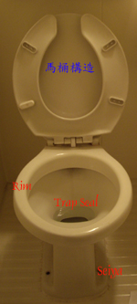
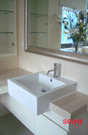

衛廁除臭消毒
※20世紀對人類文明具有不可抹滅的發明之一,就屬沖水式馬捅,它 改善了極大環境衛生,更是我們生活中重要的設備之一,因此馬桶如果未使用正確方式清潔或消毒,會造成其表面傷害更容易卡垢,而近年來國內免治馬桶其普及率也漸高,這類馬桶對於老人及女性使用起來更方便,但在公共場所也避免不了細菌病毒感染問題,本單元將教導消費者如何在公共場所安全使用此類產品
廁所感染消毒清潔
廁所臭味消毒



※馬桶之沖水型式
虹吸式 (Siphon Wash Closet)
噴射虹吸式 (Siphon-jet Water Closet)
漩渦虹吸式 (Siphon-Vortex Closet)
吹拂式 (Blowout Water Closet)
沖水式 (Washdown Water Closet)
衛 廁 清 潔 維 護 要 點
1.每日持續清潔:每日清洗是保持衛廁清潔之不二法門.尤其當水垢附著在上面,就更易造成污垢卡片
2.盡量使用熱水清洗其實高溫除了可以殺菌外更可以加速清潔除垢的速度,是很環保又簡單的作法,更重要的是它不會傷害材質表面.
使用正確清潔工具,使用不適當的清潔工具,會造成材質的傷害,雖然菜瓜布是很好用,但是許多菜瓜布會損傷材質,應選用特殊軟性專用菜瓜布,及細緻海綿清洗.將可延長衛浴設備的使用年限.
4. 使用適當之清潔劑:使用不當之清潔材料,如強酸鹼,雖然立刻有效,卻把光滑表面破壞,只是我門肉眼看不見,這種短視的做法,將會讓您花費更多的金錢在維護上.
5.使用正確清潔工法:清洗馬桶應先將其水面降低,再用清潔劑予與水唇部之面浸泡,浸泡越久,越好清洗
5.保持室內乾燥:室內乾燥不利於霉菌滋生,保持通風,更可將室內微生物量降低.
7.水塔每年定期清洗:水塔之水質不良也將造成衛浴清洗不易,尤其是水垢問題.
坐墊:馬桶坐墊因與人皮膚接觸,其重點在於將上面油垢及細菌去除
產生污染源的重要因素及解決對策
水垢: 山區或使用地下水較易產生此問題,除了平日的定期清洗外,才能到除水垢效果.水塔也必需經常清洗,我們也可使用水箱磁石裝在水箱內,產生電位差,使得水垢不易附著在馬桶上.
尿垢:些是因為上完廁所後沒有立刻沖水,解決此問題只需立即沖水即可.
死角發霉:每週使用一點漂白水 或是酒精擦拭,就可將霉菌去除,每半年檢查排風機之順暢及清潔